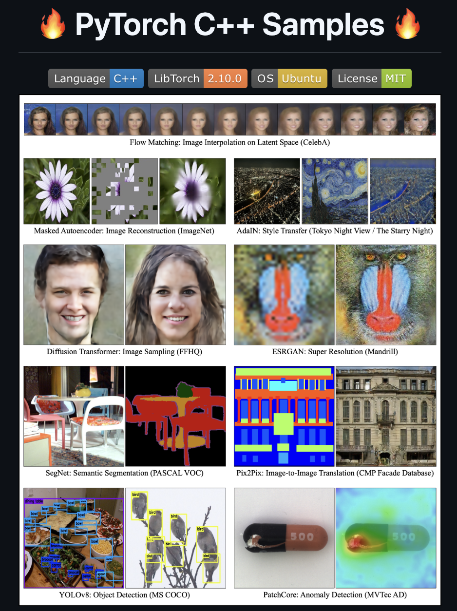

I am a computer vision researcher and AI engineer specializing in industrial anomaly detection, representation learning, and generative modeling. My work focuses on building practical and robust machine learning methods for visual inspection, especially in manufacturing environments where real defective data are limited.
My research explores pseudo-defect generation, domain-specific pre-training, and feature modeling for anomaly detection, with the goal of improving both accuracy and generalization in real-world applications. I am particularly interested in bridging the gap between academic research and deployable AI systems.
In addition to research, I actively develop deep learning implementations in both Python and C++, including large-scale open-source projects based on PyTorch and LibTorch.

PyTorch C++ Samples
A large-scale open-source project for deep learning implementations in C++ using LibTorch. Covers image classification, object detection, generative models, and a wide range of modern deep learning architectures.
Open projects page →